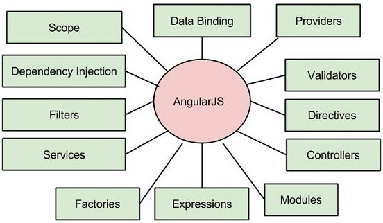
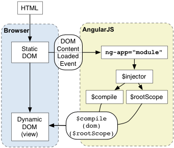
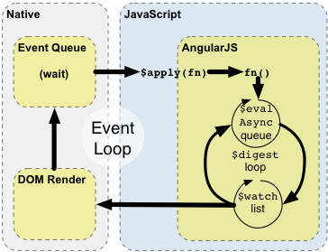
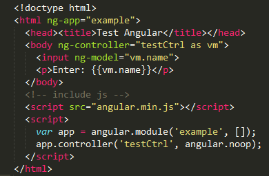

Beginning AngularJS

by PaddingMe
2015-07-08
What is AngularJS?

Google + JavaScript + Client-side + MVC + SPA
Version
Current Version: 1.4.2(stable)
Future Version: Angular 2.0(Developer Preview)
适用场景
尤其适合编写大量的 CRUD（增删改查）操作的，具有 Ajax 风格的富客户端应用。
Angularjs future
- 使用 HTML 作为模板语言
- 无须对 DOM 进行显示刷新
- 有趣的和可扩展的组件子系统让浏览器
解释自定义 HTML 标签以及属性 - 双向数据绑定
- MVC / MV VW / MVW(MV*)
- 依赖注入（dependency injection）
- 可测试性（testability）
- ......
Two-ways Data-Binding

Demo: hello1.html
Demo: hello2.html
Demo: hello3.html
Demo: hello4.html
MVC ？ MVVM? MVW
MVC = Model + View + Controller
MVVM = Model + View + ViewController
MVW = Model + View + Whatever
Demo: invoice1

filter
- currency(货币)
- date(日期)
- filter(子串匹配)
- json(格式化json对象)
- limitTo(限制个数)
- lowercase(小写)
- uppercase(大写)
- number(数字)
- orderBy(排序)
Demo: invoice2

Diretive
Demo: clock
Route
Demo: route-Demo
How AngularJS run
AngularJS应用 启动过程
- 浏览器载入HTML，解析成DOM
- 加载Angular类库
- DOMContentLoaded事件中开始bootstrap
- 寻找 ng-app， 注入服务
- 编译DOM并链接到对应的scope数据
AngularJS应用 执行期
- 浏览器等待用户事件触发
（用户交互，定时器，网络事件…） - 浏览器执行事件回调，进入Javascript上下文
- Angular在$apply中接管了JS的执行部分
- Angular进入$digest循环
- Angular进行脏数据检查
- 批量更新DOM，$digest结束
- 浏览器开始渲染
执行器示例
- 编译期
- Angular解析Directive: input[text]
- 解析ng-model并为input绑定key事件
- 为{{vm.name}}建立$watch表达式，进行监听
- 执行期
- 用户在input输入按键，触发了浏览器的key事件
- 事件回调， 进入Javascript上下文
- angular接管，在$apply中修改scope的name取值
- 触发$digest流程
- 脏数据检测，发现$watch列表中的name值变更
- 通知对应的处理函数， 更新DOM
- Angular退出执行上下文，退出Javascript的事件处理函数
How to write AngularJS
Thing in FE developing
传统前端开发思维
- 以JQuery为代表
- 以DOM为中心
- 关注VIEW层的变化和用户操作
- 「我有这样一个DOM，我想让它做XX」
新一代前端开发思维
- 以AngularJS为代表
- 以Data为中心
- 以JQuery为代表
- MVW = Model + View + WhatEver
实现一个下拉框(三级+级联)

jQuery程序猿
- 分别监控下拉框A/B/C的change事件
- 在事件中，取得下级的引用
- 查询符合上级筛选条件的下级数据
- 循环，更新下级的数据,更新下下级的数据
- ....

AngularJS攻城狮
- 定义下拉框A的数据源和model
- 定义下拉框B的数据源和model
- 在$watch里更新model引用
Demo:cascade.html
AngularJs philosophy
声明式编程应该用于构建用户界面以及编写软件构建，
而指令式编程非常适合来表示业务逻辑。
How to learn Angularjs
- 社区
- 博客
- 书籍
- 精通 Angularjs
- Pro Angularjs
- Angularjs 权威教程
<thank-you>
http://padding.me/slide/angularjs
Powered By reveal.js